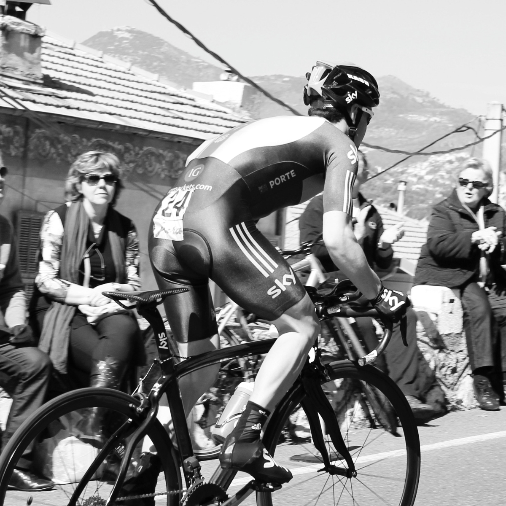

About Us
Do not ride when wet and not if you are not a skilled rider. This trail is known for its flow. The trails are well drained and suitable for riding when wet. For the ultimate downhill blast, ride to the top of Hickory Mountain Loop, take a minute to catch your breath and prepare to smile all the way to the parking lot, barely needing to pedal. The trail finishes in switchbacks coming down the mountain with some good berms.
Read moreOur Mission
The start of the dirt road is marked on the Google Map directions on this page. From here the trail narrows and skirts a rocky hillside. Several high speed, low risk sections take you down the sandy open trail for some of the most fun downhills in the area. It is steep. Check yourself before you wreck yourself. This trail ends at the intersection of Middle Earth. I'm slow and a little chicken top hit some of the gap jumps but this was super fun.
Read more
Meet Alyssa
Other features include rock garden (that is rutted on the outer edges because XC peeps avoid it), skinny with twists and some other short elevated bridges. It has a number of blind LH corners so whistle or use a bell so you can alert anyone coming the opposite way. Great conditions today. The new state course removed any of the wooden features that were present on the original 16 mile trail and replaced the skinny singletrack with a machine cut ~4' wide track down the mountain. Counterclockwise the descent is shorter but steeper in spots. Freeze-thaw cycle isn't awful, but does make this trail rather slick.
Read moreThe Gram

- 